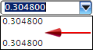

For this next path, use a green cloth overstock with a thickness of about 0.2 mm and a width of 13 mm.
|
Tip |
If you need to change just one or two characteristics in order to select a new part, you can do so without clearing all of the current characteristics from the dialog box. Select the blank space from the characteristic list you want to change, then when you reopen the list, all of that characteristic's options are available again for selection.  |
In the Search Database box, make sure Green is still the selected COLOR value.
Select the MATERIAL row.
From the MATERIAL list, first select the blank entry, then reopen the list and select Cloth.
Select the THICKNESS row.
From the THICKNESS list, first select the blank entry, then select 0.2032.
Select the WIDTH row.
From the WIDTH list, select the blank entry, then reopen the list and select 13.0.
点击确定。
The resulting matching member is Wrap_1122_mm.
Select Wrap_1122_mm, then click the middle mouse button.